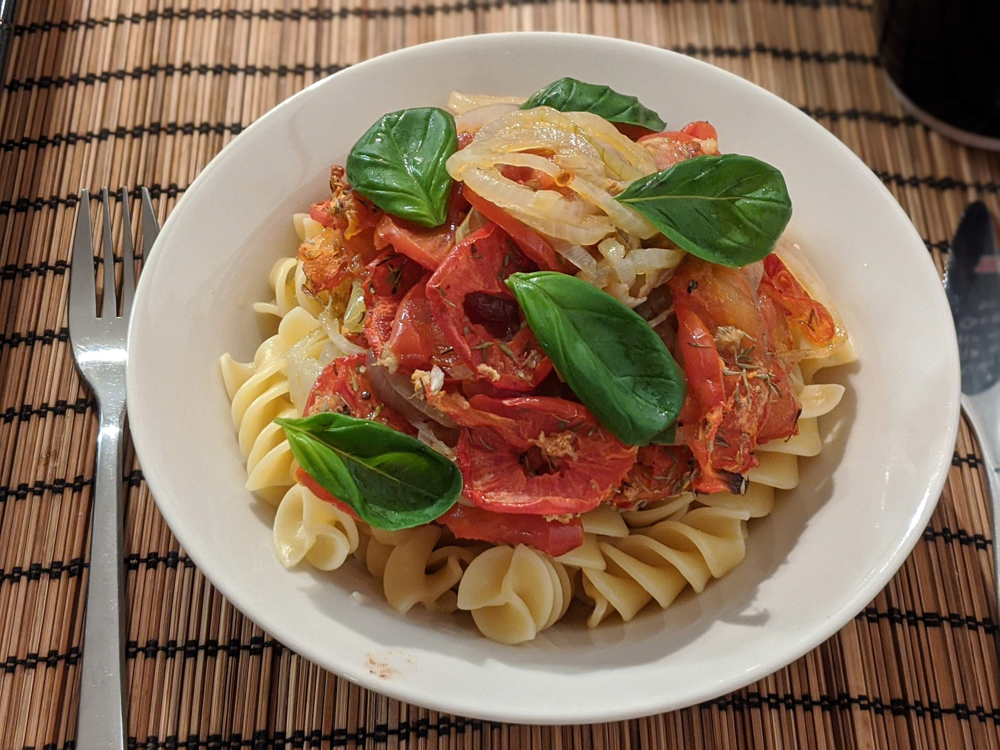

Pâtes aux tomates rôties

Pour deux personnes :
- Deux petits oignons, ou un gros
- Quatre tomates
- 250g de pâtes (pas de truc trop petit genre coquillettes, et pas de spaghettis, mais en dehors de ça c'est un peu la liberté totale)
- Une cuillère à café d'ail moulu
- Une cuillère à café de thym
- Sel, poivre, huile d'olive
- Étaler une feuille de papier aluminium au fond d'un plat à four. Éplucher les oignons, les couper en rondelles et les disposer dessus. Arroser généreusement d'huile d'olive.
- Laver les tomates, les couper en rondelles et les disposer par-dessus les oignons, en essayant de faire en sorte qu'il n'y ait pas trop d'empilement.
- Faire préchauffer un four à 200°C (thermostat 7 - je me demande si ça sert encore à quelque chose de mettre des thermostats, je n'ai jamais vu un four qui marchait avec des thermostats, et les rares gens qui ont ça chez eux doivent bien savoir faire la conversion, non ?), assaisonner le plat (sel, poivre, thym et ail moulu), et enfourner pendant une quarantaine de minutes.
- Faire cuire des pâtes (en suivant les instructions sur l'emballage, je vais quand même pas détailler comment on prépare des pâtes) en se débrouillant pour que la fin de la cuisson coïncide à peu près avec la fin de la cuisson des tomates. Mélanger le tout, manger immédiatement.